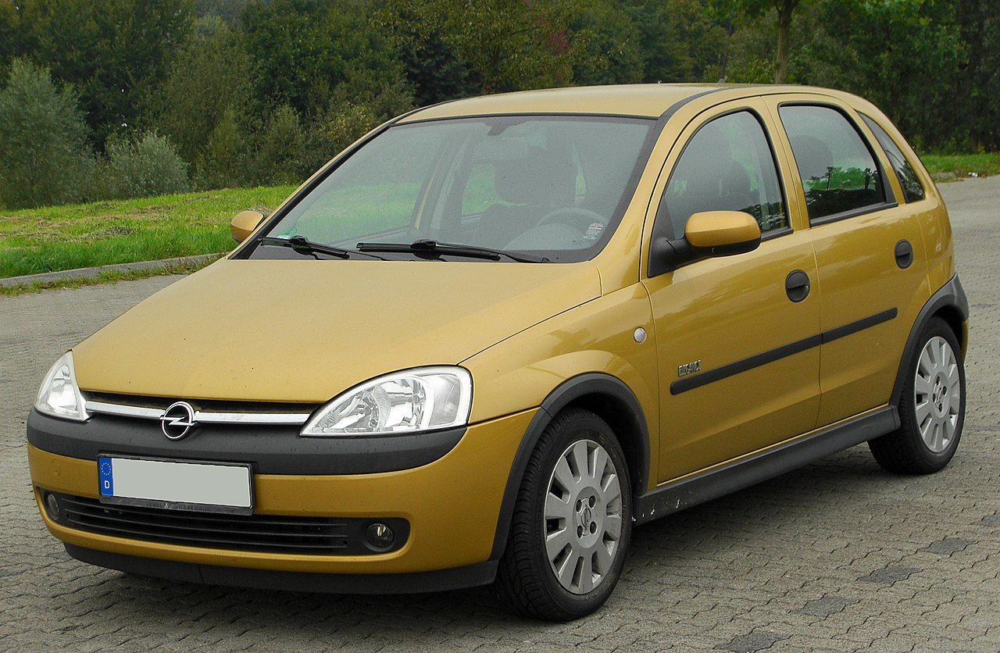
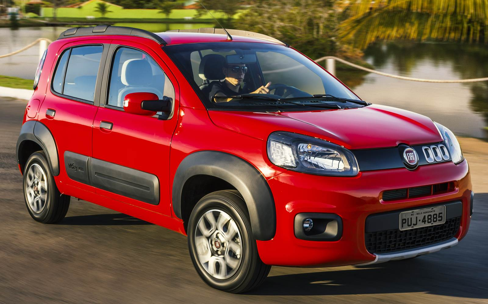
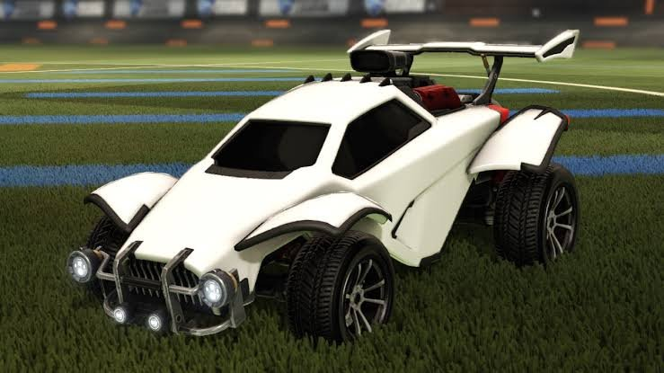
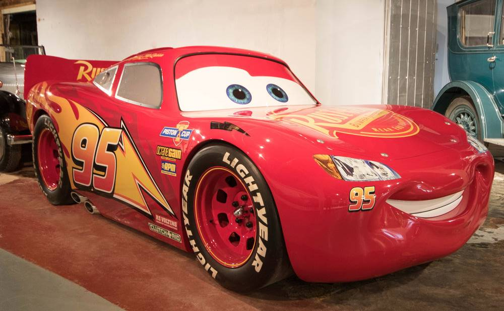
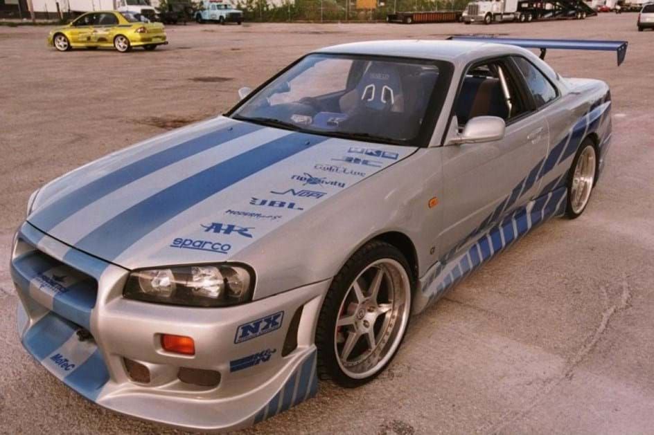

Os melhores carros para conquistar em 2023
Carros rápidos, potentes, velozes, furiosos e entre outros.
1 - Corsa amarelo de bandido
Ele é muito usado nas fugas em filmes nacionais e também ficou conhecido em "A grande família" por Augustinho Carrara.
2 - Fiat Uno de Uber
Usado para fazer Uber, 99pop, Indriver e entre outros; Muito usado por senhores que tem 50 anos para cima.
3 - Fusca Azul
Esse carro é o motivo de muitos sair no soco, crianças parar na UTI, entre outros; porém quem tinha esse carro era respeitado nas ruas.

4 - Octane dos Guris
O carro que tem um turbo absurdo para sair voando, famoso por ser apresentado no jogo "Rocket League", o carro mais usado do game.
5 - Relâmpago Marquinhos
Sonho de qualquer criança que viu o filme, adultos tentaram conquistar e perceberam que ele falava e saia em alto velocidade. Katchau!
6 - Skyline do Bryan
Ao contrário do Relâmpago, esse é o sonho dos adultos em dirigir um dos carros mais bonitos, apresentado em "Velozes e furiosos" pelo personagem Brian O'Conner estrelado por Paul Walker.
Declaração
Esse site foi feito por um aluno do full stack, sem intenções de manchar ou falar algo que ofendeu alguém, por favor leve tudo isso em apenas uma brincadeira.
Espero que tenham gostado e que aproveitem o site.